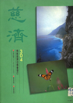
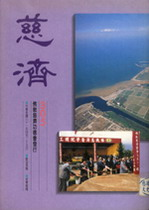
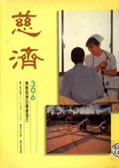
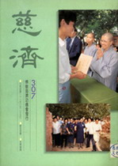

洛杉矶圣乐首演回忆录
慈济晚会演出记
冯冯
一九九一年十月廿三日
明晨就得启程赴洛杉矶了。行李仍未收拾好，歌也还没有练唱得熟悉，因 为一连十多天以来，天天都有访客上门来问事求助，以致都无法安定下来 练歌。到了今天，还是记不住歌词，心中不由不焦急，只好抄下歌词，届 时登台捧着边看边唱吧！说来丢脸，自己写的歌曲也记不住。临阵再磨枪 ，开夜车练唱吧！练到午夜，还是感到没有把握，心情十分紧张。
一九九一年十月廿四日
收拾行李又三心两意，一直弄到快四点钟才算收拾好。躺下也还是睡不着 。刚合眼，闹钟就响了，是清晨五点正。母亲仍未醒，让她多睡半小时才 喊她吧。
五点半，天色仍黑暗，街灯照耀下，好友柯其毅先生已经驾车来到在前面 马路边等候。真亏了他那么早起床驾车赶来送我们去机场。
柯先生是一位已经退休的芭蕾舞大家，三、四十多年前，他在香港曾经是 一位芭蕾舞团男主角，曾演过“天鹅湖”、“睡美人”等许多著名芭蕾舞 剧。我在他家看过他很多本当年的登台舞姿，那时的他英姿潇洒，身手矫 捷。有一张是英国芭蕾舞后玛歌芳婷与他合拍的照片，可见他当年的盛名 如何。他的太太是一位民族舞蹈家，夫妻都已退休了。
由于兴趣相投，他俩与我成为好友，常有来往。柯先生常常帮忙我，这一 次他不辞劳苦，清晨四时就起床驾车来送我母子登机，真是盛情可感！也 感到非常荣幸，想想看，当年的香港首席芭蕾舞男主角名人艺术大家，亲 自驾车接送我，有几个人能得这份荣幸呢？
到了机场，柯先生还替我提行李箱，又照料我母亲行走。他说他如果有空 就会去看看我们的房子。
我一共只带三件行李，可是加拿大航空公司那位黑人女职员说带得太多， 不肯让我自己手提，她一定要我交给托运。我说我怕托运会运错了到他处 ，害我没有服装登台。黑小姐说不管你，你不托运就不准登机。她又叫我 减少一些衣物，我只好打开箱子去减除内容，但是件件都是必需品，没法 子，又再装回衣箱，只好交给她托运，她却又拒收，叫我先去楼下向加拿 大海关报关。我们只好下楼去，海关白人男关员倒和气，说不用报关。柯 先生帮我们推小车行李再登二楼，我重新排队入闸，那黑小姐又跑过来说 我不该排另一行，她说我必须回到她的柜面那一行。被她左右留难，使我 们差一点赶不上班机。
进了闸，美国海关没检查。七时半，我偕同母亲从加拿大温哥华乘加拿大 航空公司班机，经过三小时航程，于上午十一时飞抵美国洛杉矶国际机场 。这是我三十年来初次搭乘飞机出远门，也是我第一次搭乘喷射客机，因 为我一向有“惧高症”。不免有些紧张与土头土脑，但因机上的驾驶机师 与空中小姐对我很特别照料，一路上也很平稳，很快就习惯。我并无惊慌 叫喊。
下到洛杉矶空港的大楼，我差点迷了路。那么大的空港大楼，好像是一座 城市。我从未见过那么巨大的机场。比温哥华的空港大了不知多少倍。旅 客人数又多，我真有些心慌，携扶着母亲，在那巨型建筑内的走廊转来转 去，幸好有英文路牌，跟着指示前进，上上下下电动旋梯几次，经过很多 门道，才走到大楼前厅来，向旋台上取回了四件行李，走向大门外。
大楼门外挂有英文牌子，按字母次序排列，我们是在加拿大航空公司的牌 子下面。我想“慈济”的人必会到此门来接我。他们若是不来，那我可不 知怎么办？这么庞大的超级大都会，我连东南西北都弄不清楚，又忘了携 带慈济的地址。我是第一次出门远行，我母亲又不识英文。在这异乡陌生 大都会，怎么办？
在马路边等了一个多小时，都没见有人来找我们。后来我想他们可能进大 楼去找了。于是我让母亲进里面去就座，我自己在路边看守行李等候。
果然，黄思贤居士早已来了，他进了大楼去找我们，他在Ｂ座找，我们从 Ｃ座出来，彼此没碰到面。他终于走到Ｃ座来发现了我母亲，才扶她出来 找我。原来他的汽车就停在我前面不远，他的朋友王先生一直坐在车上等 待。我曾望过去数次，彼此不认识，直到黄思贤找到我们，才知道彼此白 等一个多小时。
黄思贤居士问我们累不累，我说累倒不累，不过有些害怕。因为我一向有 “惧高症”，别说是乘飞机升上三万多英尺高空，就算是乘升降机也害怕 。这一次若不是为了“慈济”做事，我才不肯搭乘飞机呢！
黄居士说不知道我患有“惧高症”。他再也想不到我这个天不怕地不怕的 猴头竟会怕“高”。是的，我什么都不怕，不怕黑夜，却怕登高。这是从 小就有的心理恐惧，是无法解释的心理弱点。黄居士说他很感动，我居然 克服了“惧高症”，而飞来洛杉矶为慈济做事。我告诉他那是经过差不多 一年的内心挣扎，才终于决定接受邀请的。
是的，黄思贤居士老早在一年前就邀请我来洛城，我一直东推西搪，不肯 接受。不过我并无告诉他我“惧高”。在这一年之中，黄思贤居士曾冒风 雪，代表我飞往北京，接洽交响乐团与合唱团演出我的圣乐，他又全力出 资制作费，他帮了我很多大忙，我衷心至感。所以当他又再邀我之时，我 的口气就软多了。后来，证严上人透过黄思贤居士传言：指定我作为他的 代表主持“洛城慈济美国分会新址启用典礼”，我极感荣幸之余，终于克 服了“惧高症”而来洛杉矶。
说起来有些可笑，一个那么顽皮的人会惧高。但那是事实，而且，需要经 过一年的挣扎才可克服它！倘若不是被证严上人的伟大慈悲贡献与慈济的 爱心所感召，我恐怕仍是惧高不敢启程的。
这些年以来，多少宗教与学术机构邀请过，我都推辞了呢！人家以为我架 子大，怎知我是有“惧高症”不敢坐飞机。
黄思贤送我与母亲到希尔顿大酒店去，他为我们预定了两间套房，设备豪 华，我觉得很不安。老实说，我贫穷潦倒半生，我母出身贫寒，我们从来 也未住过这样豪华的酒店。黄思贤原邀我住在他家，其他好些位洛城友人 也都邀我住他们家中，但是我觉得不便打扰任何人的私人住宅；我恐怕会 有很多人来找我，出出进进的，扰乱了人家私宅的安宁，所以我要住旅馆 。我在电话中要求黄思贤给我廉价的小旅馆，母子同住一房就好了，没料 到他竟招待我住进了有名的豪华希尔顿大酒店两间套房。我们真过意不去 。
母亲很累，我让她在酒店休息，我随思贤外出。他带我去西尔大公司试穿 他为我预订的一套蓝色西服，作为他送给我的慈济制服，他什么都为我安 排好了。公司职员很快替我改修好了西装裤的长短。思贤又买了浅蓝色衬 衣给我。然后带我到“慈济文化中心”。
在路上，我注意到洛杉矶的新兴市区非常整洁，街道与行人道看不到任何 破纸与垃圾，不像温哥华那么脏乱。房屋建设也比温哥华新型漂亮，商业 大楼几乎全是最新型的玻璃钢筋摩天大楼。住宅很多是西班牙式别墅与庭 园，在明媚的阳光之中，显得非常华贵优雅。不像温哥华终年阴暗雨雾下 的幽暗木造陈腐房子。洛杉矶的“瘴气”一向是有名的，可是这一次我来 到，却没有碰上任何“瘴气”。那明媚的阳光与清洁的空气使我感到很意 外地惊喜。相较之下，一向以空气清新自傲的温哥华，在此时却是烟雾重 重，乌烟瘴气，呛得人咳嗽不止！
十六年前，我曾乘灰狗巴士到过洛杉矶一游，阔别十六年，看到洛杉矶已 经建立了很多现代化的新兴市区，令人刮目相看。古老的温哥华没有像洛 城这样的宽阔马路，也没有这样的整洁。就是在公司遇到的服务态度，洛 城也比温哥华有礼周到得多。我发现加拿大一般人的敬业精神远不及美国 人。在温哥华，尤其在某些华埠商店，店员跟顾客好像是敌人仇人相见似 的，这情况越来越恶化。
思贤带我到达了“慈济文化中心”，这是慈济在洛城的第一个会址，是一 所四四方方的平房，地方也不小，布置得很不错，大概是思贤两年前购买 捐出给慈济的吧？我没问，只是这样猜。因为慈济美国分会从前是在加州 北中部的，原由黄思远居士主持，后来他因迁居及公务太忙，两地往返不 便就辞了职，然后由黄思贤居士在洛城接办。
我起先以为他们是两兄弟，后来黄思贤从洛城飞来温哥华访我，我才知道 他们不是兄弟，只是同姓，名字叫“思”什么的，都是他们皈依了证严法 师之后，由上人所命的戒名。（您看我多孤陋寡闻！），好像他初次是偕 同叶曼居士来访的，一行有好几个人，我也记不清了。再也没料到日后仰 仗思贤的经济大力支持，才得以制成了圣乐录音，难为了他冒着北京大风 雪去为我洽订制作合约，他出钱出力，为我而万里风尘仆仆，我永远都会 感激的。
慈济同仁已经在门口列队伫候热烈鼓掌欢迎我，真令我受宠若惊！我回礼 不迭，思贤一一介绍，我也记不住那么多人的大名。一时只记得一位李德 宣先生，一位李静宜小姐，一位蔡小姐，一位杨小姐。到了屋内休息一下 ，就开始接见很多人，包括几位记着与电视摄影机，谈了没多久，慈济会 友说记着团已经在大堂等了很久，催我出去接见。
思贤与李德宣带我到大堂去，一看，满座都是记者，坐了四五排椅子，有 四五十人左右，那么大的阵容，把我吓了一大跳！回忆起二十七年前，我 多次被像这么多人的记者阵容包围访问，那时候年少，受宠若惊之余，也 还能侃侃而谈。如今垂垂将老，已无复当年的豪气，见到那么大阵容的记 者团，我心情不由不陡然惊慌了起来，好比是被罚留堂的小学生面对训导 处的一群老师。
洛城十多家电视台与十多家报纸的代表都来了，记者团一见到我出现就大 家鼓掌欢迎，态度十分友善热情，使我减轻了紧张。黄思贤居士首先致词 数句，然后就让我对记者团讲话，我首先问候及致谢各位记者。然后记者 们就先后向我提出问题，我一一予以回答。在洛杉矶的五天访问期间，每 天都有新闻媒体记者来访，包括各地的各家中文报纸和来自台北的报纸特 派员，还有洛城的十多家电视采访录影与台湾电视台的特访。这显然都是 慈济功德会的安排与邀请的，否则怎么会有那么多记者来访我？我又不是 什么大明星大名人。我只是一个过气的文人而已。
记者群采访的问题，多数偏重我的个人背景，即是我的所谓“神秘”的一 面，他们问我怎样在当年声誉如旭日初生之时，那么年轻就突然从名利圈 子退出成为一个隐士。我回答是从小就怕热闹场面，过惯了贫穷日子，不 习惯名利圈中的虚荣与热闹，所以退出了文艺圈与电影圈。记者们又问我 隐居的修行生活，我回答说也没有什么特别的修行，只不过是半耕读地自 修佛学与医学及科学，闭门读书与写作，不作任何社交应酬，如此而已， 也谈不上什么隐居，我仍然有时外出去买物。只是不让人知道我是谁。“ 敝衣破鞋无人识，踏过樱花第几桥？”自觉逍遥自在。不愿再进入纸醉金 迷的俗事了，直到参加慈济功德会的工作，我才重出江湖。
记者们就问我是什么因缘投入慈济工作？我回答说是被证严上人与慈济人 发心筹建慈济医院的大慈大悲精神所感召的。我说当初由谢冰莹教授的介 绍，我深深的被证严上人的大慈大悲所感动。看到上人不辞劳苦地到处去 救助苦难不幸的人，济贫恤孤，又建医院救助贫病，我觉得这正是正信佛 教的济度，我于是就捐出作品义卖来捐献给慈济，可是得款很少，我没有 什么钱，只好宣布为人看病义诊，请读者直接先捐款给慈济或由天华代转 。我那时每看一个人收捐款四千元台币，天华公司汇集了大约有六十万元 给慈济。就是从那时候开始和慈济结了善缘的。后来我无物可供义卖，就 将自用的念珠捐给慈济义卖，得到八百万元。去年（一九九○）我把唯一 的法宝──释迦舍利子与佛骨璎珞串也捐给慈济义卖，支持慈济医学院建 校，目标是七千万元新台币，听说已经由慈济会员们集体认捐了五千万元 左右。我非常感动。
记者们又问这一次是什么因缘来洛城登台演唱呢？我回答说，这一次是证 严上人因筹建医学院太忙无法抽空来洛城主持慈济美国分会新楼落成启用 典礼，上人指定我作为他的代表来为他主持揭幕。我本来不敢应承，但是 在黄思贤居士等多人敦促之下，我也明知我是不够资格的，但是，上人的 慈悲使我感动至深，只好厚颜地恭敬从命了，这就是我来洛城的因缘。同 时也适逢我的拙作圣乐制作完成。我也想藉着慈济举行弘法音乐晚会来发 表拙作。而且，我因已无任何东西可供义卖，只好厚着脸皮登台“卖唱” ！其实我也不是学音乐的，也不是会唱歌的人。恐怕一开腔就吓得人家掩 耳而逃啦！
记者们听到我说“卖唱”，就都大笑了起来。就有记者要求我当场先唱一 段，这可叫我感到相当尴尬！没有伴奏，怎么唱？可是我还是唱了两句“ 地藏菩萨”，自知是声如老牛，但是记者们都有礼地鼓掌了，我就说请大 家指教，请到晚会去再指教。
记者团问的问题还有很多，我就记忆所及，另外记录了下来（请参阅另一 篇拙文！）
记者会之后，思贤与夫人在其住宅招待我母子晚餐，素食做得很精美，黄 夫人非常好客，是一位典型的贤妻良母。我和他俩的四岁幼子很玩得来， 那小弟弟真聪敏可爱，临别时他忽然自动跪下向我顶礼，他说是顶礼菩萨 ，我觉得很愕然，我去抱他起来，他却不肯起来。他坚持要跪伏在地面， 不住说：“拜拜菩萨！”我说：“伯伯不是菩萨！弟弟不用拜！”他说： “不是伯伯，是菩萨！”
思贤说：“奇怪，小鬼怎么会这样子？”
我说他大概平时跟父母拜菩萨惯了。
回到希尔顿酒店已很晚，淋浴之后，转念大悲咒及观音菩萨圣号，然后就 寝。虽是疲倦，却睡不着。生平第一次住大酒店那么豪华的套房，睡在那 么好的床上，我却浑身不舒服，真是个没福气的人！
“金窝银窝不如狗窝”，俗语这么说，我还是怀念家中的破床垫。
一九九一年十月廿五日
上午又再度接见记者。中午，思贤等居士来接。思贤又请了一位慈济女居 士马太太（吴师姊）来陪伴我母亲，以后她每天日夜来陪伴我母亲，她自 己驾车来，携来食物饮料，她能讲广东话，她照应我母，无微不至，令我 母子感激无已。幸好思贤有此安排，使我母得到妥善照料，我得以安心及 专心办事。
思贤请我母子，由一位马太太及一位王先生陪同之下，赴一家西餐馆用午 膳，思贤知我最爱吃“鳄梨与煎蛋卷”，他为我们叫了两客。我吓了一跳 ，从未见过那么巨大的煎蛋卷，大概是用十二个鸡蛋煎成的吧？母亲吃不 到一半，尽管我仍有牙痛，我可全都吃完了我那一份，又喝了两大杯橙汁 。（我在启程之前两天才在温哥华牙医诊所拔了一只烂碎的大牙，手术两 小时，余痛未消。牙医赵医生说倘若我不拔掉它，可能会肿了半边脸登台 ，所以我赶紧拔了它，带痛登机。）
午餐后，思贤带我们到达慈济文化中心，王端正先生带率领着慈济会员在 大门外欢迎我，早已排满了数百人在伫候，全都是穿着慈济制服，女士们 一律是深蓝色旗袍，男士们全穿深蓝色西装，大家都展露出诚恳无比的热 情笑容，鼓掌欢迎我母子。李德宣先生上前来照料我，像昨天一样（我到 此时才和他熟稔一点，头一天是弄不清楚他的姓名）；记得他以身护卫我 ，牵着我的手，又一手隔阻那些要上来太亲近我的非会员人群。真令我感 动。
思贤在长途电话说过，将有两位男会员志愿做我的保镖。果然，李德宣和 几位男居士会员一直都在我周围保护我，李静宜小姐和吴师姊等女居士则 保护我母，我们才得以穿过那室内的拥挤人群。很多人伸手出来要握我， 很多人高举照相机在头上向我闪光拍照。一向不肯露脸被人拍照的猴儿， 这次可亏了大本矣！我大叫“赔本！赔本！”，大家都大笑，在笑声与掌 声中，他们簇拥我进了客厅。
慈济的女居士们准备了很大的一盘什锦水果，捧来客听招待猴子。可惜猴 子牙痛，无福消受，只有喝杯咖啡而已。那时再有电视记者来了，又有报 纸访员来了，问我很多问题。记者小姐们的问题兴趣显然是在我的身世与 个人心路历程，而我的兴趣是在于推崇慈济功德会证严上人与会友们的贡 献成就。我重申我是由于被证严上人的慈悲贡献所感动；因而发心追随他 与慈济会友参加慈济行列。我强调此次破例东山复出就是为了一尽棉力， 支持慈济筹募医学院建设基金。我的涓滴之力不算什么，我感谢慈济接受 我。
一位电视女记者要求我脱下小帽子让电视机镜头可以拍到我的全部面貌。 我婉拒了。那位小姐数次坚持要我脱帽。她说：“观众有权要看见你的本 来面目，请别让观众失望好吗？”
她的态度有些使我难堪。我说：“我接受电视访问，主要是为了要为慈济 医学院筹募基金作一点宣传，并不是为了我个人亮相给任何人详细看清， 假如您坚持要我脱帽来露出我的秃发丑相，我可是不能从命的。说到真面 目，我现在并无化妆，还不算是真面目吗？假如您们不满意，那么随时可 以中止访问。”
我的不合作态度，一时弄得双方都很尴尬。电视女记者与摄影师都愕然了 一阵子。我是最不喜欢被人揭短的，学佛也仍未学到忘我无相呀！我最怕 被人看见我的秃头“地中海”！凡人到底是凡人啊！我年轻时一头美发垂 额，衬着大眼睛，引起制片人注意，叫我拍演“美目王子”一片，后来又 拍了“海军日记”一片，两片并未造成轰动，只留下一些照片作为纪念。 现在是老了秃头，叫我去露出秃头给人看？是否太残忍了一点呢？
我对女记者说：“你还年轻，你有一头秀发，你不了解我这种心情的。”
我差一点就要起身告退了，叫我露秃头上镜，我绝对不干！老实说，我自 己并不喜欢上电视，多年以来，拒绝了电视台多少次！
香港的一家假发公司郑金松老板，在他的好友黄源秀警官的介绍之下，送 了一顶假发给我登台演唱之用，假发即时运到，我非常感谢。可惜假发工 厂的师傅把它做成乌黑的颜色，我戴上它反而显得更苍老。我的发色本来 不是黑色的，我是一头的棕楬色卷发正好配上琥珀色眼珠，若一换上深黑 色假发，就不衬眼珠了！不过，工厂师傅怎会知道？他看过我寄去的颜色 样照，他说：“中国人怎么会有黄发的？”他坚持替我做了黑发。手艺是 一流的，可惜不太合用，所以我来洛城不敢戴用它。（来加国见过我的客 人，都知道我是褐发黄眼的。他们若见到我戴黑发，难保不吓得落慌而逃 吧？）
慈济一位小姐（好像是李静宜）出面调解，才把僵局打破，使那位女记者 让步不再坚持我脱帽上镜，这样才完成了访问录影。
然后晚会司仪倪北嘉先生来了。他是一位很年轻漂亮的男士。他是相当有 名气的一位节目主持人，难能可贵的是，他这次是志愿义务来为慈济晚会 担任司仪的。他来与我交换一下节目的意见，可是我们没谈几分钟，慈济 同仁就来催促我上场了。因为会议室已经坐满了人。
被接引到了会场一看，真是人山人海！掌声如雷，大家站起来欢迎我母子 。非但会场满座，连走廊都站满了人，也数不清有几百人了。我母被安排 坐在前排，由吴师姊陪伴照料。我则登上讲台。王端正先生被邀首先致词 ，他说很欢喜会见了比他早了二十年得奖的“十大青年”。
（王端正先生是第二十一届时十大杰出青年，我是首届）
“各位好！”我笑着问候全场：“我们终于会面了！你们终于看到猴子了 ！”
在全场的大笑声中，我开始讲述我如何被证严上人的伟大精神感召而参加 慈济工作，我也宣布了从温哥华带来香港一位陌生的马家骏先生寄给我转 交给慈济，支持医学院基金晚会的支票一千五百美元，和温哥华世界佛教 会会长冯公夏老居士及夫人等支持购七张百元厚的支票，和观音寺捐助一 千美元（另寄上），还有，纽约一位因车祸以致不幸全身瘫痪的陈树滋医 生捐赠晚会的一百美元。
我赞叹陈医生，他这样不幸，又失业，他是刚从中国大陆来美不久就被人 撞车以致全身瘫痪，失了业，生计无着；有妻子及一子，经由报纸登载他 的不幸之后，有热心的一位读者来信要求我救助他。我从此和他联络上， 他并不肯接受我的金钱帮助，他只肯接受我的鼓励，我天天抽一段时间为 他祈求观音菩萨，我是与他约定同一时间祈祷的。由于我的鼓励，他开始 信仰了观音菩萨的神力，我答允他，让他在半年之内可以坐起来，可以写 字写信，我答允他可以在三年之后站起来！我希望他可以重新行医，多救 活不幸的贫病，他都应承了。在三个月左右时间，陈医生已经能坐起来了 ，他也能用手执笔写信了！他写了好几封信给我。他说每天约定祈祷时间 都有感应，观音菩萨的慈悲神力不可思议，使他信心大增，他现在充满信 心，在三年之后一定会重新站起来，他寄给我一张他坐在轮椅上的照片。
对于这位勇敢的青年医生，我有着无限的敬意与关怀，我仍在天天为他祈 祷，我衷心祈求观音菩萨加持他，使他站起来重新行医济世！没料到他这 样艰苦困难，竟寄了一百美元来支持慈济医学院！这是一个四个月之前还 是颈子以下全身瘫痪的人，医院宣布他无望的呀！
我把陈医生的支票交给黄思贤，请他向大众展示此一支票！
故事讲完，全场许多眼睛都湿了！这是观音菩萨奇迹的又一事证，也是一 位勇者的故事。陈医生来信说他已听从我的建议，在家中开始接受一项电 脑函授课程。对于这位勇者斗士我有无限的关怀，我会继续为他的复原而 祈祷，直到他重新站起来！我会不断祝福他！愿观音菩萨深深加持他！
在讲话的中途，会场起了一阵骚动，大家望向门口——原来谢冰莹教授来 到了！她是由马润潮教授夫人搀扶进来的。后面还跟着几位女士。谢冰莹 教授是享誉中外文坛六、七十年的名作家，她的名著“女兵自传”被国际 翻译了二十多种文字版本。当年法国名作家罗曼罗兰先（名著“约翰克利 斯多夫”作者）曾经称赞：谢冰莹为本世纪最伟大的中国女文学家！“女 兵自传”畅销超过半个世纪，历久不衰。这位伟大的女作家，这一次特别 从三藩市飞来洛杉矶捧我的场。她十多年二十年前在横越太平洋来美的轮 船上跌断了腿骨，忍着痛来到美国才获医治，装上钢制螺钉，至今仍是举 步不良。
看着这位八十八岁高龄的伟大女作家，一跛一跛地进场，看到她越来越瘦 的脸，我感动得热泪夺眶而出。我回忆起当年我才十六岁，慕名上门拜访 她，没有约定，没有人应允，这位女作家竟是那么慈祥谦和，接见了这个 贫穷无名的小男孩在她的师范大学教授宿舍客厅，她一些架子也没有，她 给我糖饼吃，还谆谆垂询我的情况，倾听我述说我的身世，她淌下了同情 之泪，她鼓励我开始写作。她教我当作是写日记来开始。在她慈爱温暖的 鼓励之下，我写下了后来轰动文坛的百万字小说“微曦”！此书至今已畅 销将近三十年，印到第五十版，追随谢教授“女兵自传”的骥尾！
此书使我被选为首届“中国十大杰出青年”，奠定了我在文坛上的微名， 我敬爱她，一如我敬爱我自己的母亲！将近三十年的交谊，数百封通信， 无论我怎样的出名，我始终是最敬爱我母亲与谢冰莹“谢阿姨”，我一直 称她为姨妈！是她介绍我参加“慈济”的。她和我母已有二十七年没见面 了，我是在一九七七年赴三藩市探望过她一次，也有十多年没会面了，这 一次她不辞劳苦赶来捧场，多么令我感激啊！
会场的年轻群众大多数不知道这位老太太是何许人，我激动地大声宣布： “请欢迎‘女兵自传’大作家谢冰莹教授！”
全体都起立热烈鼓掌，有五分钟那么长时间。
谢阿姨由黄思贤、李静宜等人搀扶坐在前排我母亲身边，这两位年龄相近 的老太太紧紧握手问候不停，会场情绪波动了好一阵子，因为能见到谢冰 莹露面可真不太容易！
我在台上讲了一些有关慈济的赞语和一些简单的佛理，我提出了大多数人 疏忽的大宝积经的一句名言：“布施可得智慧”，这是很少人注意到的， 一般人只知道禅定可得智慧，又以为只有从打坐才可入禅定，殊不知行坐 起卧都可静定。心有大慈大悲布施救苦救难，则心地光明充满法喜，也可 进入禅定而得大智慧；所以我说慈济的工作与贡献，就是对于自己修行也 是有很大益处的，布施也是去除贪嗔痴的一种方法！
我鼓励慈济人不要被外界的一些恶意或无知的批评所动摇信心，“义之所 在，虽千万人，吾往矣！”我这样说。
我又说不要介意有人批评我们慈济人“只做慈济不念经不念佛！”我们念 经念佛难道需要在路旁市中心表演吗？要向谁交功课吗？我们以实践佛法 利众济世为重，不愿以“自了汉”求证个人的“果”为重，这才是完全符 合原始佛教的！否则，只顾自修求证果而不以众生为念，那算是什么佛教 徒？我又说，证严上人讲法，已经把实践佛法的道理深入浅出讲出来了， 我们大家都在努力实践之中，谁说我们没有修行？难道只有打坐，日夜什 么都不做，只是念佛号才是修行吗？只有讲名相才是学佛吗？有人讥讽上 人与慈济人将来去不了“极乐世界”“只有念佛不停才可以去？”我说： 我们并不求往极乐世界，我们只想实践佛法慈悲，创造人间的净土！把佛 法慈悲的爱推广于人间，像浪潮一般遍传世界，使人间成为充满爱的有情 慈悲净土，互助互持的爱的世界！
我在会众掌声中结束演说，然后王端正与黄思贤两位先生邀请谢冰莹教授 上台致词。谢阿姨只讲了短短几分钟，她赞扬证严上人与慈济人的慈悲精 神与贡献，然后她说她今年已经八十八岁〈台下狂热鼓掌〉，她只见过冯 冯这一个孩子有这么大的决心写文学、写佛学、写圣乐都很成功。谢阿姨 的过奖使我汗颜、感愧交集。
然后又请马润源教授夫人上台致词，由于马夫人的出力连络，才使我的圣 乐获得北京交响乐团与合唱两大团体的成员演出及录制，我们都非常感谢 ！她只讲几句称赞我的话就下台了。
座谈会结束时已经是下午六点半。思贤送我母子返希尔顿酒店，谢阿姨与 我母将近三十年没见面，她也跟我母一同回旅馆谈天，后来才由马夫人来 迎接她返回她住的酒店休息。我母留下，而我则随思贤赴帕沙典那学（Ｐ ＣＣ）大礼堂参加彩排。
帕校大礼堂设计完全像一座大戏院，有两千座位在斜坡上，舞台很大，音 响效果很不错，怪不得名声乐家林宽教授多次打电话给我力劝租用ＰＣＣ 果然场地好，外面停车场很大，可容纳数千辆汽车，前门也很气派，广场 很宽阔，像是什么州政府大厦广场。
我到了场内，发现灯光布景并未做好。慈济会员义工在催促ＰＣＣ的职员 赶工之中。原来合约规定必须由ＰＣＣ的员工来做，他们有工会保障权益 。不知问题出在什么地方，只见他们在舞台上跑来跑去，叫叫喊喊，好像 怎么都弄不起来。黄思贤告诉我从台湾赶运来的佛像仍给扣留在洛城海关 不放行。他担心来不及明天供设在慈济新址揭幕，他必须和几位会友出去 尽力交涉，希望海关放行。看来他为此事十分不安心，他叫我祈求观音菩 萨加持。我答应了，我说一定没问题，明天佛像一定可以如期及时供设在 新址。思贤出去了，我坐在观众席前排，心中默祷，获得的感应令我安心 。我听别人说，以往佛像运来美国并不受检查就即刻放行。不幸最近有些 不法之徒利用这一份优待特权，他们从泰国把海洛英藏在佛像肚子内运来 美国，被海关逮到，从此之后，海关就一律检查进口的佛像。
舞台上乱糟糟，不可能让我开始彩排，我带来的两只衣箱的戏服，也被舞 台上的ＰＣＣ职员赶我搬来挪去了多次。我给撵得十分狼狈不安，只好又 再搬回台下观众席去。并请工作人员各忙各的，李静宜小姐与吴师姊拿了 两份餐盒给我母子，说是大家都没空出去吃晚饭，就吃便当吧。我们刚开 始吃，ＰＣＣ的安全职员看见，就跑过来么喝：“不准在场内吃东西；你 们要违反规定，我们就关闭礼堂，收回不借给你们用！”。规定得那么严 格，而且显然事先没有讲明白，临时才要撵人，这些ＰＣＣ保安人员也未 免太过分了。在人矮檐下怎敢不低头？我们又是远客，只好忍气吞声，索 性把便当丢到垃圾桶去！
中国人在美加，不管你是什么身分，有时候总免不了受一些种族歧视。像 我母子在温哥华国际机场登机之前，就被加拿大航空公司的那一位黑人女 职员百般留难。她以一种十分鄙视的态度对待我。
这一次在ＰＣＣ，我那可怜的衣箱，又再被ＰＣＣ的人撵来撵去的。而且 撵我的，又是一个黑人，真不由我不疑心黑人歧视中国人了。
在台下枯坐等待十分无聊，只好到处走走东观西望。听见大门外走廊传来 一片天真可爱的童声合唱，我知道必是慈济青少年合唱团在练习。我走过 去看看，果然正是他们，全体站在楼级上唱歌，大的大约十五六岁，小的 不过是七八岁，男孩女孩都穿了白色衬衣与白色西装短裤。这批孩子，可 爱极了！他们正在练唱我作曲的两支歌“慈济进行曲”与“佛教青年进行 曲”前一曲是我创作佛教歌曲的第一首，后者是为了这次晚会赶写的歌曲 ，难为了孩子们在那么短短的几天之内居然也唱会了，也可见这位女老师 的指导有方。我知道这位就是著名的声乐家黄醒民教授，她是义务来支持 慈济晚会的。
等孩子们唱完，我过去笑着打招呼：“小弟弟小妹妹好！黄教授您好！我 是冯冯，你们唱得真好呀！”
孩子们欢喜得大声叫喊：“冯叔叔好！”
黄醒民教授笑着和我握手寒暄，这时候慈济义工人员来找我说张导演找我 ：我赶忙回到舞台上，会见了导演张元高先生、舞台设计林保勇先生、灯 光设计高杰先生，大家都很客气地和我交谈。他们全都是专业的，都放下 自己的工作来为慈济晚会策划，那种热忱真令人感动，张导演是曾任电视 剧导演的，他这次大才小用来指导我们做晚会，他的态度非常谦和，问我 有什么节目要变更，我说只有一首歌是临时加入的，就是“印度之歌”， 因为原定的“普贤菩萨”一曲音域太高我唱不出来，才临时改唱歌“印度 之歌”，那是帝俄时代作曲家诃萨柯夫的名作，我选唱它是因为音域适合 我，这歌是我一向最爱唱的歌之一，原词是俄文，但是我不想在台上唱俄 文，所以我另行配上中英文歌词，我将穿着印度王子服装唱出此曲，我知 临时改节目可能引起许多不便。
张导演一些也没有皱眉，他接受我的变更节目，他把各幕布景节目秩序对 我讲解明白，与我取得默契，他非常尊重我，我也表示我一定听从导演的 指挥。我过去演过电影与话剧，知道演员必须尊重及服从导演才行。没有 人能自己看见自己演出之时的缺点在那里，是必须有一位导演来指导的。 很可惜舞台上乱成一片，根本没时间来排练一次。
这时候慈济义工人员来通报说有一家姓佘的来看我。原来是久别三十年的 老朋友佘书麟教授一家来了。我惊喜不已，慌忙下台去迎接。佘教授当年 是台湾师范大学国文系的主任教授。他和夫人马少珍女士住在台北泰顺街 ，我那时才十几岁，先是认识了海军军官马连生，比我年长十多年，他和 我很谈得来，他带我回他家认识了他的姊姊马少珍和姊夫佘书麟教授。从 此我常在周末去探望他们，成为他们家的常客，在他们家吃饭有时住一夜 。佘氏夫妇有一个女儿建华，那时大约是五岁，有一个男孩肇华，那时是 两岁。两个小孩都爱和这个冯舅舅玩，喊我为小舅舅。每次我一走，小弟 就舍不得我，他就大哭。后来，我出了国，听说连生兄结了婚也有了一批 孩子，和他们分别久了，失了连络，不知他们也来了美国，想不到这次会 在洛城重逢！欣喜可知！
原来是佘家看到了慈济晚会的海报，佘夫人就写信给慈济留交给我。收到 信，我打电话给她，因为正式晚会的票早已售罄，没有票，我就请她来看 我的彩排。
当我看到这两位白发苍苍的多年好友夫妇之时，我忍不住热泪了，我拥抱 他俩！当年贫苦少年的我，在他们家获得过多少的温暖啊！吃过他们多少 餐饭啊！未曾报答他们半点，现在他们路途迢遥驾两小时车赶来看我！那 位玉立亭亭的少妇，就是当年呼唤我为“小舅舅”的五岁小女孩建华么？ 重逢恍如在梦中，我一一拥抱他们一家三人，大家的眼睛都湿润了。
“小毛弟呢？连生哥哥呢？”我问。
佘夫人告诉我：小毛弟肇华在邮局上夜班，临时请不到假来看我。连生哥 哥仍在台北，也退休了。我回忆当年那个两岁的淘气的“小毛弟”，叫他 的舅舅连生做马儿给他骑在背上，我回忆五岁女孩建华和我躲在客厅桌子 底下玩耍，她把通花桌布披在她自己头上扮演新娘子，她坚持要我做新郎 ，她要和我结婚！
“不可以！”我说：“我是你舅舅呀！怎可以和你结婚呢！”她说：“你 又不是真的舅舅！”
那情景宛在昨日！我拥抱着建华，重逢的热泪再也忍不住了！
“小妹！”我悲喜交集，问她：“还要和冯舅舅结婚吗？记得吗？”
她笑了，眼中也含着泪。她说：“记得！”这位外甥女，已结婚很久了， 有了一个男孩，我要求看看男孩照片，她却因匆忙赶着驾车来，忘了带。
我同时也在怀念当年的那位高大英俊的海军军官义兄，不知他现在是什么 样子了？我也想看看他一家的照片，可是建华都没带来。
我带他们到前排与我母亲见面，让他们叙叙旧。大家都是悲喜交集！
接着，另一位失了连络二十七年的老朋友邓琦先生也到了会场找到我：这 位当年英俊潇洒的陆军少校军官，是我在军中服务做翻译官时期的好友， 若不亏得他盖章担保，我是不可能出国的，当年出国需要有少校起码的身 份做保证人，而我那时又穷又不认得什么人肯担保我思想纯正不敢投共叛 国，邓琦先生竟毅然担保我出境！此种恩惠，我永远都感铭五中！我出国 二十七年，的确也做到了绝不赴大陆、绝不叛国。邓琦在今年〈九一年〉 六月曾专程偕他的第二任太太来加探访我。当时他突然出现在我家门口， 大声问：“你是冯冯吗！”，我也很费了几分钟才认得出是他！他发福了 ，头发也白了，一双有神的眼睛才仍然让我认得他！我禁不住拥抱他，热 泪奔流！
“琦哥！琦哥！”我啜泣：“想不到你来看我！”
我少年时代最喜欢交军官朋友，最要好的两位好友大哥，一位是陆军军官 邓琦，一位是海军军官马连生，都是使我常常怀念的好友，他们都大力帮 助过我，我永远都感谢他们。
这一天晚上，又再见到了邓琦大哥，我喜欢极了又再拥抱他流泪。〈平常 我是个硬汉从不流泪的〉。琦兄说他和太太与岳父母全家，明天晚上星期 六都会来捧我场，我高兴极了！邓琦在我出国之后，由于服务成绩优异， 很快升级，做到了陆军的连络室主任。后来退役移民来了美国。而我一点 也不知道！将近二十八年的阔别再重逢，他还全家来捧场，我怎不感激呢 ？他要邀我到他家叙叙，我郤因晚会事忙去不成，只好等下次了。
舞台上清理出场地，导演叫我们上台排演一下。邓琦夫妇有事先告辞了， 我送他们到门口，然后上台，佘氏一家则留下看我排演。
我到了台上，和著名声乐家宋茂生教授会了面，我向他致敬及表示仰慕， 并请他指教。他很谦和地鼓励我，声乐家黄醒民女教授也过来为我打气， 钢琴家伴奏林小姐也来和我说话。我在钢琴上试了一下音，然后就随著录 音带的播放而练唱，我唱了“晚祷曲”。其实唱得不好，贻笑大方，尤其 是在两位国际知名的声乐大家面前献丑，真是汗颜！可是台上台下的慈济 人，全都停下了工作来倾听我，我唱完，台上台下都热烈鼓掌，两位声乐 家与那位钢琴家也都鼓掌，使我获得很大鼓舞！
由于路遥，建华小姐又惦念孩子，她就与父母向我告辞，我亲送他们到门 口拥抱作别，我是很少拥抱别人的，除非是像这样的多年好友！他们还留 下了礼物，可惜我竟无法取得正式上演的票子送给他们再来！
说起晚会售票，我已经收到很多电话说买不到票，尤其是一百美元的荣誉 票最难买到。这简直是难以相信的事实。〈后来回加以后，有一位女士打 电话来说花了四百美元才买到第一排的票子一张，慈善晚会也有人炒黑市 票，真是怪事。〉
黄醒民教授非常客气地再三鼓励我，她说：“虽然你不是学声乐的，你却 唱得很好，音质很好，感情很诚挚，也能控制音量与表情，你放心演唱好 了！不必害怕！”
受到这位著名声乐家黄女士的多次鼓励，使我觉得胆壮了许多，我真感谢 黄教授！
另外，舞蹈家沈蓉小姐也过来称赞我：她说从没听过任何中国作曲家有这 样美丽的作品，她说不能相信这些是一个没学过音乐的人所作的曲子。沈 蓉小姐是从北京来的一位著名青年舞蹈家，擅长敦煌舞，这一次她也是自 告奋勇参加慈济晚会，表演我的作品“美丽的莲花”一曲，连服装也是她 自备的。我向她致谢，她很谦虚地问我对于此曲的舞蹈有什么要求，有什 么特别需要注意的事项？我说我只会作曲不会跳舞，一切还是请她以她对 音乐的感觉去自由发挥表现就好了。沈小姐秀外慧中，有很高的艺术气质 ，相谈之下，我才知道她亦会跳印度舞，并且也备有印度舞装，可惜我一 直不知道，否则我一定加入一段印度舞曲，请她发挥她的舞蹈天才。我说 这一次来不及了，希望下一次晚会请她跳印度古曲舞吧！
星期五这一晚的彩排实际上并无可能进行，因为舞台上灯光布景仍在赶工 ，工作人员跑来跑去忙着，我再和张导演交换意见一次，然后就离场了， 免得在场内有成批成批的人来找我看病问吉问凶的。我再三说明我此次南 来是专心演唱的，不能多讲话倒了嗓子而明天登台变成哑吧！
张导演、李德宣、李静宜等人说带我去一个较为清静的地方练唱。我求之 不得，于是乘李德宣的汽车前往，那时已是晚上十一时，我们来到一家音 响效果公司，里面有录音室，原来这家公司的少东苏先生（英文名jeffney ）也是慈济会员，他很发心志愿担任晚会的录音效果工作。
我从家中带来的自备音带杂音很多，那是我用我那廉价的小录音机录下的 。我没有任何音响设备，我用的都是二十多年高龄的老爷唱机与录音机， 也还是朋友送我的。我可买不起数千元起码的新型音响效果设备。我用那 小小录音机录成的音带，平时在家中用用也还凑合，但是要用来作公开演 唱的伴奏，那就不行了。刚才排练就用了它，听来很多刺耳杂音，苏先生 （杰夫雷）自告奋勇地向我要了我的音带去，放在他的专业巨大设备去重 新录音和消除杂音。他那全套设备占了一房间，我猜光是一座就最少价值 五万美元。全套最少值二十五万美元吧？苏先生说我猜对了，我吓得咋舌 ，一套音响竟要二十五万美元，比一幢房子还贵呢！
我就在那录音室内练唱，等到我唱完，已经是午夜，jeffney（苏先生） 也把录音的杂音消除好了，外面又来一批女士送来素包子给我和大家吃， 慈济人真热心，什么都很周到，可惜我仍牙痛，无福多吃，只吃了半个。
回到希尔顿酒店已是子夜将近二时。洗个热水淋浴去就寝，谁知再也睡不 着──由于白天喝了两三次咖啡，我一直睁眼到天亮。明天就要正式公演 了，心情总是紧张的，我已经二十七年没登过台啦！
一九九一年十月廿六日
早上开始下微雨。
两夜的失眠，精神很萎靡，真担心能否在今晚登台，千万别在台上昏厥晕 倒啊！早上勉强睡着了大约一小时，却被电话铃吵醒了。酒店柜台服务员 打电话来说有几个人在大厅要求见我。这使我很惊讶，我住在希尔顿，本 是秘密，连慈济人都不知道，怎么竟有人找上门来？可能是跟踪来的吧？ 在电话上问他们是谁。一位男士回答说是仰慕者，也是佛教徒。他们费了 很大功夫才打听出来我住在希尔顿。听他口气是很诚恳的，我只得穿衣下 楼到大厅来接见。会到面，原来竟有十二人之多！有男有女。他们说是代 表一家佛寺来请我到他们寺院去坐坐，说那边已经聚集了五六十人在等候 要我过去见见面。
这件事使我真为难！慈济工作人员数百人，本来约好今天上午与我在茶会 见面。黄思贤说工作人员很辛苦，到了今晚就须在场外维持秩序，指挥交 通，带位子，收桌¨¨没有机会看我的表演，本来昨夜可以看我彩排，却 又因障碍而未果。因此大家希望与我同进茶点谈天。这个茶会，我是应该 去的，可是我也推掉了，理由是太累，失眠；怕应酬太多今晚失音不能唱 ，我知道很对不起慈济工作人员全体，但是我失眠了三晚，又讲了两天， 已累到声音沙哑。确实无力再出席茶会讲话了。慈济人到底是自己人，大 家很体谅我，都说就让我休息好了，没料到居然有外界人士找上门来邀我 ！
并非我不肯应邀，实在是我太疲倦了，我向来人再三致歉，说明我已三夜 未睡，若再去他们佛寺演讲，那我今夜就会失音无法演唱了：我并且也说 明，这一次我是由慈济安排来为医学院筹设而登台的，我必须专心为慈济 服务，不能分心旁骛。如果其他机构有诚意，就请另外与我订定未来的约 会，到时我一定应召而来专心为之服务，也不会把他安排的时间分给他人 。我自问讲话已很有礼婉转，但是显然仍是使他们很失望，他们都呈现怏 怏之色离去，其中的一位女士在门口对同伴说我瞧不起他们师父，她的同 伴则说我已经变了，变成搭臭架子了！
我真是有口难辩，实在我三夜失眠，而且食不下咽，又饿又累，都快晕倒 了！我叹息着回套房去，吃了一些吴师姊买来给我用的素点，也吃不下多 少。我企图再躺一下，不料第二批访客又至！这一天上午，同样性质的不 速之客来了五批，都是很有名的一些佛寺弟子们，都是来要求我去他们庙 里谈谈的，有一家甚至还摆了茶会欢迎我。我都很谦礼地婉拒了。我亲自 送他们走出酒店大门，又合十又躬身，也还是无法获得他们的谅解。我知 道，这一次我来洛城是开罪了太多人了！我已听到流言说我很骄傲，看不 起出家人，目中无人也目中无佛，不拜山、不拜庙、不拜法师，这种流言 ，日后必流传得更多。我也无法可自辩！我只是一介凡夫俗子，怎么分身 化千百去应付那么多人？又怎么能天下人人皆大欢喜！而这些人怎么也看 不出我已经身心交瘁支持不住？我听见他们的批评，任我怎样修行，也受 不住了。我忍气含泪，有谁知道？
多次被扰，我欲求假寐一小时亦不可得，我告诉柜台职员我不再接听电话 不见客。他们告诉我仍有访客在大厅流连不走。我只好叫他们说我已外出 。我在房门挂了“请勿打扰”牌子，想小睡一下，不料打扫工人墨西哥妇 人竟打电话进来说，她必须在下午三点之前打扫及换床单，否则不能交差 。听她说得那么可怜，我只好开门让她进来打扫。她却又多话，又问我是 不是电影明星。为什么那么多人来找我，等待在大厅上。我已很久未说过 西班牙文，那妇人话更多了，原来她不是墨西哥人，她是宏都拉斯难民。 她牢骚一发，又诉又哭泣，当我是她同国人了。我讲了些同情的话，给她 五块，她才走了。
怎么也睡不着，只好低声练唱。到了下午三点钟，黄思贤来了，他说要早 一点送我上ＰＣＣ去，他说他还得与会友去海关继续办理报关，让佛像可 以及时安座在静思堂。我说一定可以及时让佛像升座，我叫他不必担忧。 我说已经为他祈求过观音菩萨了。
到达ＰＣＣ才是下午四点钟左右，慈济会员都忙着。身穿崭新慈济制服深 蓝色西装，头戴慈济标志帽子的青少年，有大约两百人吧！已经开始在正 门广场大道竖起慈济大旗于夹道两边，气派雄伟，这时已经飘着微风细雨 了，孩子们冒雨工作，不畏风雨，令人感动！思贤告诉我洛杉矶已经半年 苦旱，这还是第一天下雨，而且碰巧正是观音菩萨成道纪念日，我说：“ 这正是观音菩萨赐降的甘霖呀！”
思贤说：“怎么这么巧？当初我来与ＰＣＣ订约租用大礼堂，原是讲十一 月一日的，后来ＰＣＣ主动要求改为十月廿六日今天，当时我也没注意到 今天是观音菩萨成道日，忙昏了头，根本没注意到，并不是我有意选的日 子啊！就会那么巧落在观音成道圣辰，昨天也还是大太阳，今天打一早开 始就下雨！解除了旱象！”
“观音菩萨的威灵神力是不可思议的啊！”我说：“这场雨水不就是祂施 的杨枝甘露吗？”
思贤与会友赶去海关申请放行佛像，我祝福他们成功圆满让明天有佛像受 供于静思堂新址。他们走了，我托吴师姊照顾我母亲，我自己就到后台去 准备，距开场只有一小时了，我得化装与换上戏服了。
那座舞台的灯光与布景，到了此时仍未完成，工作人员仍在忙碌着。我不 由得着急，可是我也帮不上忙。张导演来找我，指示我该等候在舞台左侧 ，由李静谊小姐提场叫我出场。我都记在心里，看见工作人员那么紧张忙 的跑来跑去，我自己的紧张也就不算什么了。
舞台的后台两侧的地下室各有一座化妆室，我被领引到右边楼梯底下那一 间，说是给我专用的。另外左边地下室的那一座是给小姐们使用的。谁知 我却在右室门口被拒入内，那里面已有很多女士在化妆之中，她们都是慈 济合唱团的团员，从台湾专程来参加晚会表演的，有二三十人左右，她们 一看见我就笑叫着：“这儿是女生化妆室，男生之禁地！”李静谊说：“ 不对，这间是给冯居士用的，那边才是女生用的呀！”“不对！”女士们 笑道：“男生的化妆在那一边！”
李静谊又带着我提衣箱登楼，越过舞台，回到左边，走下弯曲的楼梯，来 到左边化妆室，可是这一边也给女生占用了。“这儿是女生化妆室！”女 士们笑叫：“男生不可以进来！”
“可是我们刚才去了右边，她们女生已经在使用，说这一边才是男生用的 呀！”
“错了！错了！”女生们说：“那边才是男生用的！”
我尴尬地提起衣箱，再回到右边去，半路上碰到女生一群迎面而来，我到 了那边，门却锁上了。灯光也熄了，不知是怎么一回事？一位女士告诉我 是ＰＣＣ后方管理员来把它锁上的，说我们并不需用两座化妆室，把女生 们都赶到左边化妆室去了。
原来如此，怪不得我在半途碰到她们向左边走。我只好又再回到左边化妆 室，女士们又大叫：“男生不许进来！”
我是晚会中的主角，却没有化妆的地方！我觉得真窘，马上就开场了，我 还没化妆，难道就这样出去？这时候工作人员各忙各的，李静谊又被导演 召走了，我也不知该找谁去？我只好去找那位ＰＣＣ的舞台管理人，他有 一间很小的办公室，在左边后台的侧面楼梯角，是一间三角形的小室，只 容得下一张办公桌和一把椅子，到处凌乱地放着杂物。我把我的窘况告诉 他，我说我需要一个地方来换长裤，不能在化妆室女生们面前换的。这位 白人管理员哈哈大笑着，允许我使用他的没有门的办公室。这样我才有地 方换装。
李德宣先生赶回来找到我，助我换装，我匆匆脱下我的菲律宾国定礼服菠 罗麻绣花白衫，（那是以前的总统麦格塞塞送我的）。换穿上我带来的加 拿大皇家海军制服与白裤子，李德宣替我整理，另一位先生助我打领带， 因为我不会打领带！门外已站了很多人在看我，李德宣出去安排了四位男 士会员把守了进入后台的门口，不放任何人再进来打扰我。
我把皇家海军白色军帽一戴到头上，门外所有的工作人员就都喝彩拍掌了 ：“真帅！”“真帅！”大家都在叫嚷。引得更多工作人员跑来看我，众 人都说：“想不到冯冯原来这么漂亮英俊年轻，比任何香港明星都漂亮呀 ！”他们真会赠送高帽子，叫猴子听了飘飘然的！几乎信以为真了。
李静谊小姐再来，带我下楼去化妆室，把我交给化妆师郑小姐。这时候， 小姐们都己化好了妆，也没有人再赶男生走了。她们三十多人都惊喜地大 叫了起来：“啊！好帅！好帅！”“帅哥！”“真是帅哥！”“比任何明 星都帅啊！”“英俊的外国海军军官啊！”“英俊小生！”
一套外国海军制服与那顶有皇冠金徽的白帽子，竟把这一个平凡、其貌不 扬的人，变成了英俊小生！连那位已经化装成莲花仙女的沈蓉小姐，也跑 过来赞美我了！
宋教授那时已经坐在座位上接受面部化装，他也站起来赞美我。我就开玩 笑说：“你呀！你们这些女生，刚才撵我走欺负我，你们就不敢撵宋教授 ！只敢欺负我！”
“对不起！对不起！”她们纷纷笑着道歉：“刚才不知道你是谁呀！”“ 要是你这样漂亮，我们就不撵你啦！还会大大欢迎呢！”
“你们呀！先敬罗衣后敬人！”我笑道。
说说笑笑，减轻了不少紧张情绪。郑小姐叫我坐下让她为我作面部化妆。 她用粉扑我的面孔，然后涂口红，画眼线眼圈。她说我眼睫毛那么长，可 以省掉装贴假睫毛。她发现我的眼睛很容易过敏，使得她画眼圈相当困难 。才画一点点眼睛就过敏地流泪破坏了化装。她费了至少半个多小时才画 完我的眼圈！我的眉毛，年轻时是又长又浓的，如今已经疏落了。郑小姐 用深棕色的眉笔替我补眉，因为我的眉不是黑色的，我的头顶现出秃发“ 地中海”，那可就没法子补救了。
装还没化好，就有慈济合唱团的女士们过来要我合拍照片，都说：“帅哥 ！和我们合拍照片好不好？”“知道你是从来不肯被人拍照的，今天可以 破例么？”
小姐们七嘴八舌地笑着争着要和我拍照，我怎好意思拒绝？“好吧！好吧 ！”我说：“今天大赠送，都可以拍照，不过可得送一份给我呀！”“一 定！”她们说。
小姐们齐声欢呼，纷纷围住我拍照，闪光灯闪个没完，也不知拍了多少张 ？还有别的工作人员和少年合唱团，也都闻风而至，人人争着和我合拍照 片留念。穿衣大镜反映出来，我也不信有那么漂亮！
“哎呀！”我这才大叫起来：“我还未戴上军帽呢！被你们拍得秃头了！ ”
“没关系啦！”她们大笑：“戴上帽子再拍啦！哎呀！你像汤尼寇迪斯哟 ！”
“这可好！买一送二，年终大赠送！”我笑说：“今天赔本赔到底了！” 戴上帽子更不像我自己了，化装真会改变形貌啊！我谢谢郑小姐。
戴上军帽，众人又再欢呼鼓掌，又再拍照，从化妆室一直拍到楼梯走廊， 小姐们又笑又嚷。上面有人来骂：“你们太吵了！吵得前台都听见了！”
“嘻嘻嘻嘻……”小姐们都偷笑扮鬼脸。
接着还有慈济男士们来合拍照片，男士们比较安静，不似小姐那么淘气。
时间已过，却还不见开幕，观众席上只有几行座位坐了人，全场差不多都 是空位，怎么回事？莫非观众都不来看？莫非我号召力太差劲？没人来看 戏，我该多么难为情啊！
一打听，原来附近马路出了车祸，交通阻塞了。我们的钢琴伴奏林小姐也 显然因此而被阻。我吓了一跳，赶快祈祷，希望她没出什么事！
等了将近一小时，一直等到八点钟，突然大门外涌来人潮，上千的观众热 闹哄哄地进场就座，慈济工作人员在入口处谦恭有礼地欢迎观众，给人印 象极佳。
观众越来越多，后到的已无座位，慈济工作人员宣布：“慈济会友请让位 给观众！”于是慈济人纷纷离座走到后面大门外的走廊上，否则真没法容 纳那超过两千三百人的观众。场内只有两千个座位，慈济此次售票已经售 出了两千五百张，超出了五百张！若不是下雨，超出的五百人都会到齐， 只好站票；但是消防局及警员在场，不准有站票，以防万一火灾堵塞出路 。幸亏是下雨，超额观众不多，只有大约两百人，由慈济人员让出位置之 后，勉强容纳得下，只是委屈了慈济人出钱购买又出力，还得站在门外遥 望，我真感动又惭愧，后悔昨天没跟他们一起茶会叙叙！他们任劳任怨， 我都那么吝惜自己的时间，真是太对不起慈济工作人员了！而且，在酒店 却又不能休息，频频应付那些来访的不速之客。早知如此，我应该来与慈 济人茶叙才是。
看到全场爆满，我才安心下来，但是随即又担心──我等一下能否演唱得 好呢？我能否使两千五百位观众满意？
有一位外界的先生后来告诉我，他说慈济晚会的售票纪录与入场人数，已 打破了洛城历来任何一个来演出的台港大明星大歌星的纪录，他说，任何 红牌明星歌星来此演出，最多只可售出百分之六十至七十的座位，也从无 这样两千多位观众的盛况。他说是我的神秘身分和“美目王子”的特殊魅 力；而我认为是“慈济”的全体人员努力宣传及安排的成果，同时也是社 会人士与佛教徒，热心支持慈济的表现，而非由于我的“神秘”、“美目 ”。我既不神秘，也非真正美目，更非王子、红星、歌星，什么也不是！ 只是一只“猴子”而已。
舞台巨幕终于徐徐升起了，台下一片热烈掌声中，黄思贤先生致词之后， 王端正先生出场致词，简单介绍慈济工作现况。他报告了慈济医学院与医 学中心的计划与意义，他说将于一九九三年秋天招生开学。他又报告慈济 已派代表捐款，往安徽省水灾最严重的地区去直接赈灾及捐建灾民住宅一 批。王先生的报告获得全场热烈掌声。接着是纪委员（纪妈妈）致词，然 后慈济合唱团开始合唱节目。别看她们刚才跟我淘气，现在可唱得真好真 庄严，令我惊讶不已！
接着司仪倪北嘉先生宣布请声乐家黄醒民教授独唱，黄教授唱了几首名曲 ，由林小姐伴奏。我听说她乘的汽车在途中被别人的汽车撞坏了。谢谢菩 萨，林小姐平安无恙，虽然迟到，终于及时登台。她的伴奏很好，可惜Ｐ ＣＣ的那座老爷钢琴差劲，影响了她的水准。黄教授是洛城有名的女高音 ，她唱得好极了，她并不需用麦克风。全场热烈鼓掌声中，她唱完退入后 台，经过我身边，我向她致贺。她又再鼓励我叫我别怯场，她说她保证我 会唱得很好。
然后司仪宣布请声乐家宋茂生教授演唱名曲。宋教授是有名的男高音，他 唱了好几首台湾民歌，经过艺术手法改编的，又唱了两支意大利歌剧名曲 ，他嘹亮的歌声获得观众热烈鼓掌。
随之是沈蓉小姐出场表演舞蹈，跳我的作品“美丽的莲花”，这时后台的 工作人员喷放出干冰，舞台飘浮着烟雾，灯光照射下，好像是仙境。美丽 的沈蓉小姐，身穿白色与青色两色轻纱舞衣，轻盈起舞，宛然是莲花仙子 ……美丽清雅极了。可惜我认识她太迟，否则我会多安排一两首音乐给她 表演。
沈小姐的美妙舞姿，获得全场热烈掌声，她优雅地谢了幕退下，经过我身 边，我恭贺她并且捧吻了她的手背，这是西方剧场与乐坛的一种向表演女 艺术家致敬的礼貌，她含笑致谢退下。
慈济青少年合唱团上场，在黄醒民教授指挥之下，孩子们唱出了我的作曲 “慈济进行曲”和“佛教青少年进行曲”。孩子们可爱极了，天真纯洁， 人人着白色衬衫与白色长裤、白鞋。当他们开始唱“佛教青年，新时代的 好青年……”之时，我忽然紧张万分，连腿都在发抖，两手冰冷，因为此 曲唱完，我就必须出场了！
李德宣、李静谊、郑小姐，还有好几个人都在作最后一次检查我的化装与 服装，大家都叫我别害怕，沈蓉也来叫我别怕，黄醒民教授来握住我的手 说：“你唱得很好！你不必害怕！我以一个学声乐的人来看，你的确唱得 很好很好，千万别害怕！你出场之后就当平时练唱好了！你看不见台下观 众的，你就当没有人在看你！你会成功的！不要害怕了！我对你充满信心 ！”
李静谊捧来一杯水给我润喉，人人都安慰我支持我，可是我还是害怕！三 十七年来，这是我第一次重登舞台公开演唱啊！
我向来就有些畏羞怯场，也有些自卑感，自己并非歌星，又没学过声乐， 平时从来也没唱过歌，这一次是为了替慈济募款，匆匆忙忙，在启程之前 的两个星期内才开始练唱，事又太忙，练唱也是一天练、两三天没练的。 又没有老师指点，只是自己跟著录音带使劲子乱叫而已。嗓音沙哑，好比 哈利贝拉方提，却又没有人家的韵味。奇怪，平时骂人倒是嗓门挺大的， 唱歌却是另外一回事，倘若唱歌也能像骂人那么得心应手就好了，有时低 音唱得像老牛叫喊，还自以为是纳京高第二呢！又自许为尼尔戴门。
昧了良心的自己骗自己，把自己推上了舞台，这一次可真是出丑了！现在 箭在弦上，不得不发，可怎么办？真想向后转偷偷溜跑；刚才听过两位声 乐家的美妙歌声和慈济合唱团的合唱，我怎敢出场献丑？可是现在开溜行 吗？台下两千多人热心付了一百美元一张的票来支持慈济，同时也是为了 一看猴儿真面目而来的。我能溜走吗？身旁这批慈济朋友们都在热切地寄 望于我，我怎能自己先行垮台？没奈何，只好硬着头皮出台吧！祈求观音 菩萨和妙音菩萨务必加持于我，别让我演出失败丢脸！
我心不住忐忑狂跳，而腿发软，两手发抖，连嘴唇也在颤抖！在这几分钟 内，我心绪有多少千回万转的念头啊！
而这时候，慈济少年合唱团己经唱完了我的“佛教青年进行曲”，已唱到 黄教授加上去的“啦！啦啦啦”──该我出场了。
张导演低声叫喊：“冯冯准备出场！”
我点点头，捏着一把冷汗。
司仪倪北嘉走出去宣布：“现在我们请大家期待已久的美目王子──冯冯 先生出场演唱他创作的圣乐歌曲！冯冯先生是公认的美目王子！以美目着 名……，有请东山复出的美目王子，冯冯先生！”
我的眼睛与任何人一样，并无特殊，亦不自觉有什么美。可能是琥珀色眼 睛不多见，所以从婴孩时代起，就成为被人溢美称赞的了。西方式的双眼 皮琥珀眼，使我当年被选为“美目王子”。少年时代的虚荣，早已成为陈 迹，至今忽然又再被重提，人已垂垂老矣！真是不胜沧桑之感！不过我总 还是有些虚荣心残余的啊！我仍然多么喜欢被人这样称呼！
年将半百的冯冯，不知老之将至，在李静谊小姐引导下，挟着少年时代的 虚名，身穿加拿大皇家海军军官上校军服，黑色呢质上衣金锚扣子，袖口 四重金线，白色长裤、白色鞋子、白手套、黑领带，白色海军大帽歪戴， 金色皇冠帽徽与铁锚，帽檐金穗，露出半边棕金色的鬓发，这就是步出舞 台的冯冯！
台下观众已经热烈喝采鼓掌，掌声海潮般涌来，台下数百盏闪光灯照着拍 照，观众这般热情，使我感激无已，几乎热泪盈眶！可不是，谁料得到观 众竟如此爱护我这个年将半百的平凡的人？我既非声乐家，又非歌星，更 不是明星，也不是政要名人！
观众两千多人的热情鼓掌喝采，使我减轻了紧张怯场之感。我感激地展露 笑容举起两臂成Ｖ字形，走向舞台中央前面。观众更加热情鼓掌叫喊：“ 冯冯！冯冯！”“好年轻啊！”“怎么这样年轻？才二十岁似的！”“好 漂亮啊！”“帅哥！帅哥！”“其实漂亮的是指海军制服与化装师的成就 ，我哪有什么漂亮呢？老猴子罢啦！”
我举右手向全场行举手触帽的加拿大式海军敬礼──手心是向外的，不同 于中国的海军礼，那是不许外露手心的。当年我拍演“海军日记”，身穿 中华民国海军上尉制服与帽子，行的是中国军礼，现在穿加拿大装，当然 随装而异。台下的掌声一直不停，我一面致谢，并且打手势请静下来，这 也需要几分钟才静得了。
忽然有六七个男士女士在台下走向台前来，捧着花向我献花。这倒很出乎 我意料之外。依一般音乐会惯例，是没有未演出先献花的。这次一定是慈 济人特别破例来捧我的场。我非常感谢，我弯身去接受了献花，并且和他 们握手。我捧着那么多大束的花，台下又再热烈喝采鼓掌，闪光灯数百盏 不停地向我闪照，电视镜头照着我。
我把花交给了旁立的李静谊小姐代收下，接过她代拿出来的我的歌谱本子 ，我就开始我的节目。
我首先谢谢观众的爱护，我说明我是怯场的，一怯场就忘记歌词，所以需 要看着谱子才敢唱，随即我又说明为什么我穿海军制服。我说因为少年合 唱团唱我的进行曲，更重要的理由是：佛法是渡船，渡众生到彼岸，“慈 济”功德会是佛法渡船之一，证严上人是这艘佛法慈济之舟的船长，我很 荣幸地成为慈济号法舟的一个船员，追随证严上人与慈济人，所以我穿海 员服装！（我没透露我最爱穿海军装扮演海军）
全场又再热烈鼓掌，我随即讲解佛教六度万行以布施为先，为第一功德、 第一义，布施又以法施为第一。救苦救难救贫救病，使众生脱出苦难而感 化向善。把爱心慈悲心推广于人间，使人间温暖处处慈悲处处，这也是很 重要的法施、财施与无畏施。慈济人在证严上人领导之下，建立医院、护 校，如今又建医学院与医学研究中心，正是法施的最高表现，是有远见的 贡献。我又说，从慈悲布施可以获得禅定智慧。因为布施充满法喜而心境 平静，由静生定而生慧！（我讲话之时，由林小姐弹钢琴伴奏）
我知时间已晚，我出场时已经九点钟，所以我只作简短的十分钟演说，随 即展开我的歌唱。
我唱的第一首曲是我的音乐成名作“晚祷曲”，后台播放我的圣乐录音带 ，由北京音乐家们录制的“晚祷曲”。这是我修订过的曲谱，比以前在台 湾录制的版本改善了很多（例如：把间奏缩短，增加了合唱力量，成为六 部大合唱），我随著录音而开嗓歌唱。此曲我是最熟悉的，背得出歌词， 我回忆当初这歌曲在我心中萦绕了二三十年的往事，每一句都是我用眼泪 写成的，这次在台上，我也还能尽力用真挚的感情唱出来，唱到末尾，我 已热泪盈眶，几乎泣不能成声了，幸而还能勉强控制得住。
台下的掌声排山倒海般涌来，使我感觉好像站在悬崖狂涛边缘！
我唱的第二支歌是“谁来拭干我的悲泪”。这也是用北京重录的修订版录 音作伴奏。这首十分钟长的抒情艺术歌曲，也是充满对观音菩萨的孺慕感 情的，我越唱心中越悲苦，唱到“观音菩萨啊──寻声救苦啊，观音菩萨 啊──大慈大悲──祂垂怜人间悲惨，祂早已慈泪盈眶──”我亦早已悲 泪夺眶而流，不能成声了。此时台下观众也都默然无声，直到间奏之后， 我方能唱完末句“谁来拭干我的悲泪，除了慈母观音菩萨！”台下掌声雷 动潮涌，我躬身答谢，泪水流满了两颊；我激动得无法支持再唱下去，转 身走入后台左侧幕后，掩面哭泣！我周围的慈济友人都在安慰我，说台下 的观众也很多人在哭泣。
几分钟之后，我拭干了泪水，补了妆，重新提起精神，换了一顶军帽，再 次出场，因为我还未做完节目，司仪倪北嘉已在宣布再请我出场。
在观众狂热的掌声浪潮之中，我再回到台前，我宣布我戴的是加拿大海军 帽子另一顶，但上面的帽花是泰国海军航空队的，是我偶然发现的一枚纪 念品，花了三十元加币买下来。我喜欢它的设计，顶上是一座皇宫佛寺， 中间是皇宫标志，下面是一只飞机螺旋引擎，全部都是金色的镀金铜章， 我觉得很适合晚会演出。我相信在座没有人见过这种泰国皇家海军航空队 帽徽。
我随即讲述佛教主张孝敬父母，佛教断爱并不是指断绝天伦之爱，那指的 是欲爱而已。我说佛陀成道后，还去度父母修行得脱释迦灭族之祸。我说 孝行当以地藏菩萨最著名，地藏菩萨本愿经叙述地藏菩萨到地狱救母，救 得母亲永出三涂，菩萨见地狱众生受苦，祂就发宏愿，要救尽地狱众生出 苦海改罪恶、迁恶为善，祂誓言地狱不空永不取正觉成佛！我讲完就唱我 作的“地藏菩萨摩诃萨”一曲，这一首是我平时常唱的，富于民歌风格， 我唱来颇觉顺利而且很投入，唱完此曲，台下又再爆响热烈掌声，比刚才 的更响更热烈。也可以隐约看到有些前排观众在拭泪。
感动之余，我把节目次序记错了，我以为我已经唱完了先后两首“地藏菩 萨”，我其实只唱了一首，仍有一首未唱。我糊里糊涂的转身走向后台， 没料到一头撞在已经垂下的布幕上面，惹得台下一阵笑声。我并不知后面 在换景，已经降下了幕，这一次可闹了大笑话！我走向幕翼，李小姐她们 说：“还有一支没唱哪！”
我出去加唱临时作的短歌“你那对热情的眼睛，充满着慈济的光芒”然后 我慌忙又回到台前，宣布要唱“跪祷在佛座下”。怎知音乐播放出来，却 是新作“地藏菩萨”一曲，原来我忘了唱此曲，我连忙向观众致歉，并且 立刻唱“地藏菩萨”新曲。此曲是两段制，我唱完第一段，在间奏中讲话 ，呼吁观众全体跟着音乐唱，我挥动两手指挥，于是观众席上响起了宏亮 的大合唱，大家都唱“地藏菩萨”，好多人眼中噙着热泪，好多人流泪满 面！这是一首很能打动心弦而易唱的歌曲，大家都跟着唱，台上台下唱成 一片！全场情绪到了一个新的高潮！
一曲既终，全场爆炸般欢呼及鼓掌。全场都起立鼓掌，长达数分钟之久！
我向观众致谢，然后到三角大钢琴前面坐下，抚弹琴键，一面弹琴，一面 讲些佛教的观念，只讲十分钟。自弹钢琴伴奏讲佛法，我可能还是头一个 吧！
然后我唱“跪祷在佛座下”一曲，此时慈济合唱团女士们已经再登台，在 我后面排列成三排，人人手持一支烛台，烛光是仿造的用电池的，（因为 ＰＣＣ不准用点火的烛光），这一曲是变调数次的新作，也是我用眼泪写 成的一曲。我也请观众全体参加合唱“观世音”，于是又再造成全场投入 的新高潮，更多的人在流泪拭泪，我唱到“跪祷在，佛座下，如见母，泪 奔流……”我也泪下如雨了！
在全场疯狂喝采鼓掌的狂涛声中，我躬身致谢，退入幕后。时间已很晚， 我必须赶紧换装，赶忙唱完节目。幸而李德宣帮我脱衣，否则我真是手忙 脚乱，那时黄思贤也从台下到后台来了。他来看我，告诉我全场反应非常 狂热。我也没时间说话，匆匆换了装，要赶回台前去，李德宣、李静谊、 黄思贤……还有几位同仁，帮我扣钮扣，整理服装，黄思贤说：“珠链子 在口袋里”我却因慌忙而听而不闻，没领会到他把一串装饰珠链放进我口 袋，前台倪先生已在催场，我赶快走出去。
这时的我，头戴金色印度王子头巾，帽额上插着一支羽毛与金雕花框子红 宝石的装饰，头巾拖到肩后。身上穿的是金色真丝手织的印度王子的长袖 王袍，腿上穿的是金色的印度王子窄裤，脚上穿的是金色的印度王子鞋子 （可是我忘了把珠链子从口袋拿出来挂在颈子上）。
这一身金色的豪华王子服装，得来也是传奇一般！我在启程南来的前三天 ，才买到的。全温哥华所有的三十家印度服装店，都没有这样豪华的服装 ，因为印度人大多数太穷，买不起。只有一家最大的印度服装店，也是我 找到的最后一家，那印度人老板娘听我说要办一套王子装，她说有，而且 只有这一套，原是做橱窗陈列招徕客人的，只有很富有的人才买得起去做 新郎礼服的。问她多少钱，她说原价一千九百九十九加币，太贵，挂了十 二年之久，也没有人问过这一套来自印度克什米尔的王子装。我是第一个 买主，她说印度北方人身材比我高大，不知是否合身？不妨试穿看看。
怎料我一穿上，简直就是量身订做的！量身订做也未必有这么合身！那双 鞋子也是独一无二的一双金色鞋子。前端弯翘起来的印度王公穿的鞋子， 而且，完全合穿，正好是我的“七号半”脚大小！那顶金色头巾，也是好 像订做的一般。虽然略嫌窄了一点点。这不能不说是观音菩萨早有安排的 又一项奇迹，就像那顶加拿大海军帽子与那双排扣子的黑色海军上挂，一 切都显然是有安排的，居然也买成了这一套王子服装！那印度店东说难得 有人肯买又合身，就卖了耶！免得再挂十二年也没人问津。
就这样，我打扮成印度王子，眼睛被化装得很美，变成名副其实的“美目 王子”了（这都是化装师之功，其实我一点也不美）！当我步出舞台之时 ，观众两千多人就爆发了空前的惊奇欢呼与雷鸣般的掌声巨涛！历久未停 ！这亦又是一个惊异的新高潮！恐怕我也第一个扮演印度王子登台的吧！
我广张两臂，接受观众的欢呼与掌声。然后我合掌为礼，我对观众解释： 化装成美目王子，是纪念佛陀以王子抛弃富贵荣华去修行。同时，我也是 为了配合唱“印度之歌”而穿这一套行头。佛法源起于印度，可惜印度早 已灭法，虽然有中国佛教僧人发心去印度重建佛教，也还未有具体成就。 感怀历史，我自己编写了中英文歌词来唱这首帝俄时代伟大作曲家林姆斯 基柯萨诃夫的名作“印度之歌”。他的原作是唱俄文的，现在我唱中英文 来纪念印度佛教──我说明我作不出那么美的曲。
后台响起了录音音乐──这也是我带来交给杰夫雷再处理过的，唱出了我 自编的英文歌词，大意是感叹印度再也没有佛法，佛踪不知何处可寻。这 首歌是有相当难度的，比我自己作的歌难唱得多。向来它都是由音乐素养 很高的声乐家男高音在音乐会上演唱的，并不是任何人都可以唱出。我不 自量力来唱这首歌，艰苦可知，可是此曲旋律实在太美！毫无嗓音的我这 样乱唱也不会破坏它的美。我自己觉得唱得很“过戏瘾”！仿佛又再身在 海滨面对着蓝天海洋，向着海洋高歌。这是我以前常做的事。
我喜欢面对大海的浪涛高唱这首“印度之歌”。这位作曲家是我最崇拜的 作曲家之一，他当年以俄国海军军官身分，随舰访问印度，写下“印度之 歌”。后来又写了“天方夜谭组曲”、“金鸣组曲”。我从小就醉心航海 与音乐，梦想要做林姆斯基柯萨诃夫第二。他是我梦想中的倜傥英雄。我 一直想追随他的罗曼蒂克的海军军官与作曲家生涯，航海遍游七海，写出 那么美妙的音乐，可惜我达不成梦想愿望。今天晚上，我扮演了海军军官 ，又唱了他作的“印度之歌”，也可聊以解慰吧！冯冯老猴儿呀！你还是 那么孩子气！
台下响起热烈掌声。我说还没有唱完哪，还有第二段是唱中文歌词的。台 下大笑！我等待后台播音，却没有声音，怎么没有啦？我向后台问，台下 又大笑。后台说：没有了。我说还有的呢？后台说，就这么多了。台下又 大笑，我急的大叫：“倒卷音带，重头再来！”台下大笑狂笑，我自己也 笑了。
原来是杰夫雷忘记我叫他将音乐录两遍，他只录了一次，我向观众说明我 们都太匆忙没有机会排练，以致我大摆乌龙，笑话百出。
音乐再播放一次，我才得以唱出中文歌词，唱完此曲，我看手表已是十点 四十分，很晚了，我得赶快做完节目，因为剧场要我们十一点收场。
我就宣布我马上进去换装出来唱最后一曲“阿弥陀佛颂”，我说：“你们 猜猜我会换什么服装？你们一定猜不到的。”我又用英文说：“Don't go away, I'll be Right Back！”引起了全场大笑。后来人家告诉我，说我当时 的神情好像一个淘气顽皮的小男孩。
回到后台。李德宣帮我换装。我慌慌忙忙脱下王子上衣与头巾，连内衣也 脱了，立刻把新装披上，戴上假发，套挂上一串白色念珠。赤着脚，走向 台前。
台下观众爆发起空前的欢呼与掌声巨潮，“啊！”“啊！”“哇！”叫声 满场！这时的我，身上披着金色的袈裟，裸露了右臂，头上戴着仿造的螺 发，脚下是赤足！胸前挂着白色念珠一串，正在合掌向观众行礼。我庄严 而虔诚地扮演释迦的出家法相！
音乐播放了这一晚的压轴之曲，我作的“阿弥陀佛颂”，是此次在北京录 制的十五曲之一，是我的一首新作，很多人都喜欢的一曲大场面歌曲，十 部大合唱与三十种管弦乐器，一共三百多人演出的大规模制作；我自问是 绝不输给贝多芬第九交响曲的大合唱，也不输给韩德尔的“哈利路亚”大 合唱！这是我发心要把佛教现代圣乐提升到成为伟大规模的作品之一！我 今后仍将朝此方向迈步前进的，不管人家怎么打击我！不管我受多少挫折 ！我已经下了决心，百折不回！
我合掌庄严地肃立在舞台中央，后面是慈济合唱团与少年合唱团全体数十 人。音乐由雄伟的男声大合唱开始唱出雄壮的声音，定音鼓随之徐徐敲响 ，震人心弦，交响乐与十部大合唱，气势之伟大，震慑了全场！加上慈济 数十人亦参加唱出“阿弥陀佛”的答句，真是伟大！佛教终于也有这样场 面伟大庄严的大合唱了！首先感动的是我自己，回忆起六七年来为了作圣 乐所受的一切种种折磨，不禁心酸，泪下如雨！泪眼望向台下，多少观众 也都感动流泪啊！
此曲唱完，观众全部起立鼓掌欢呼不绝，我赶忙进内换穿了慈济制服重新 出现台前，我出来时，欢呼与掌声仍未中辍，我行了礼并向观众致谢，呼 吁大家多发慈悲心，多多行善发挥佛教的大慈大悲与爱心！我并且致谢慈 济同仁与黄思贤、马太太及谢冰莹教授。
台下两边走来十多位男士女士，人人手捧一束鲜花，步上舞台来，向我献 花，慈济的师姊们又搀扶着我母亲登台与我一同接受献花。我后面，排列 着的是两位声乐家宋教授、黄教授与舞蹈家沈小姐、钢琴家林小姐，人人 都在我换装之时接受了献花，他们的风度真令我敬佩！他们都是很有声望 的音乐名家，为了慈济晚会，不辞辛劳，不计名位来演出，而且还那么谦 虚退让，屈居在我的后面，这种谦让美德真是令人景仰啊！冯冯又不是音 乐家、不是明星，又不是大人物，真是太僭越了啊！这几位音乐家竟能谦 让给我这样卑微的人物，可见他们的修养风度多么的伟大崇高啊！我衷心 地感谢他们！
晚会落幕了！已是接近午夜的十一点十五分了！超出了规定时间。我没唱 “安可”，因为太晚了，观众们还有远路要赶呢！洛城地方太大，随便都 要一两小时车程。我不能唱“安可”而耽误他们回家。我是有准备五支“ 安可”曲子，一支也没唱出。（其中一支是我填词的“我爱慈济”）
曲终人未散，大批观众涌入后台来找我向我致贺，著名的声乐大家林宽教 授率先来看我，与我握手，他很客气，称赞我唱得很好。林宽教授数年来 常打电话来鼓励我作曲，这一次他买了五十张票，带他的牧星合唱团团员 来捧我的场，真是盛情可感。继林教授而来的嘉宾很多，包括好几位声乐 家与几位钢琴家、小提琴家，都是名重一时的音乐界名人，都谬赞我作的 曲很美很有气派，也称赞我唱得好。宋教授与黄教授、沈小姐、林小姐等 也来致贺。谢冰莹教授也来贺我，她不住地说：“太好了，太好了！”还 有好几位名流、法师，也有基督教牧师、天主教神父也来致贺，也有数十 年未见面的老朋友。
由于ＰＣＣ剧场经理催促我们离场，我只好中断接待贺客，卸装匆匆离开 。思贤驾车送我们回酒店，我整理衣物才发现丢了一件内衣汗衫。后来据 闻是有人冲进化妆室掠去的。这样有我汗臭的汗衫，也会有人拿去做纪念 品，也真是奇闻了！还有一件白衬衫我发现被观众包围而拉扯破裂，幸亏 那时我已卸装，否则撕破昂贵的王子装或海军装，那就灾情惨重了！
一九九一年十月廿七日
昨晚演出之后，心情轻松下来，晚上才安心睡了一觉。醒来已是九点多了 。洗一个淋浴，休息一下。吴师姐早已来到，买来点心又叫酒店侍应生送 了咖啡来给我们母子。这几天真亏了吴师姐全心全力照料我母亲，我真是 无以为报！
思贤于中午来找我们，一点多到达慈济新址，出席启用典礼，会场内早已 坐满了人。思贤说三尊佛像终于在昨夜半夜以后从海关放行，连夜搬运回 来供奉在佛堂了。我去参拜了佛像，旋即开始主持了启用典礼。
到场的贵宾有当地市长、警察局长、市议员等名流和基督教代表等多人。 还有慈济的会员、台北来的慈济合唱团和洛城慈济合唱团，把礼堂挤得满 满的，我被安排坐在第一排中央第一首席。旁坐是王端正先生，再旁坐是 台北驻洛城办事处张处长的夫人。我被邀上台代表证严上人剪彩，我用英 文宣布正式启用。
启用仪式很庄严简化，我原本准备了两篇英文演说词，慈济印了其中的一 篇分发给贵宾，人手一份。可是我上台致词时并未宣读它。我说该篇英文 讲词太冗长，所以我改为简短的致词。我用英文很简明的介绍慈济，我举 出慈济已经先后救济伊拉克库德族难民、巴基斯坦孟加拉湾飓风灾民，与 中国大陆华东水灾灾民。并且说明希望与各宗教共同携手发挥人类爱心去 进行更多的国际性慈济工作。我说慈济欢迎任何宗教信仰的人士来合作。 我说各宗教之间，仪式与教义虽有不同，慈悲与爱心则无岐异，都是发挥 人类爱心互助互持的目标。
市长被邀上台致词，他说我讲得很对，宗教之间只是仪式不同，爱心相近 ，应该彼此合作发挥人类爱心。然后是张处长夫人被邀致词，两位都讲得 简短得体。
然后司仪李小姐用英文宣布礼成。王端正、黄思贤与李小姐等向外籍贵宾 赠送纪念品，我起立一一握送贵宾。平时猴头猴脑，这一天我可庄重得很 ，似模似样的，身为证严上人指派的代表，怎能再猴头猴相耍猴子。
总算没出错，庄重地做完了启用典礼。我吁了一口气，现在没有外人，轻 松得多了。我可以恢复本来猴子面目吧！很想扮个鬼脸笑一笑。
王端正先生上台报告慈济的工作成绩，他提及慈济已在安徽省水灾最严重 的地区建造一批两层住宅给灾民居住，又直接发放救济品与金钱给灾民， 我听了非常感动。
然后是资深委员纪妈妈上台致词，她幽默风趣的“无子西瓜”故事，引起 会场欢笑，我也藉此恢复猴子面貌了。
后来我被邀上台接受询问，全场递上了成叠的纸条，什么怪问题全有，包 括“孩子不听话、不肯念书该怎么办？”“你对同性恋的看法如何？”… …我一一予以最简洁的解答。半小时全部答完，宣布开饭！
聚餐之前仍有很多人来找我，送来礼物，邓琦先生及太太也送我礼物。张 处长夫人也来访我赠礼，我在贵宾室接待了张夫人和继来的贵宾，我根本 没时间参加聚餐。桌上堆放的一大堆礼物，大部分是衣服，我请思贤代我 全部捐给慈济义卖。我说，义卖做慈济用途，比我私人拥有较为实惠有意 义，思贤接受了。所以我免得把礼物带回加拿大去被海关打税。至于一位 郑先生送我母的高丽参一大罐，还有朱太太、季太太、马太太合送的营养 品，我母与我请思贤带回台湾供养证严上人，我说上人食少事烦太辛劳， 思贤答应为我们拜呈上人。
思贤驾车送我们母子回酒店时，已经是晚上十一点半了。送母亲回她的套 房休息之后，我提着一箱戏服，由思贤驾车送我到一家摄影公司去拍摄宣 传照片。这是我早上主动提出的，我说这次在洛城演出看来还算成功，我 就对王端正先生作了毛遂自荐，我说假如慈济也在台湾举办募款晚会，我 很愿意再为慈济效劳，王先生说回去会向上人报告我的发心。现在固然不 知慈济会不会在台湾举办募款晚会，我觉得我也应该开始做些准备工作。 第一件事就是趁着我身着戏服，拍摄一批宣传照片，以供慈济总会在台湾 将来刊印宣传海报之用，也可以义卖这批“明星照片”。我虽非“明星” ，也不妨冒充一下呀！思贤很赞同我这个提议，他就立刻打电话去找摄影 家丁威廉先生。这是星期日晚上，我们运气非常好，思贤找了丁先生，而 且他慨然允诺为我免费拍照，思贤又找到了化装专家郑小姐，请他来为我 化装，郑小姐也欣然答应了。
思贤驾车送我到达丁先生的摄影公司之时，已经是午夜十二点。丁先生和 太太已在等后，郑小姐也驾车来到了。我向他们致谢及致歉，我非常感激 他们不辞劳苦在半夜帮助我。丁先生是慈济会员，郑小姐也是，他们两位 都说为了慈济，再晚也不要紧。慈济人的服务精神，真令我感动！
丁先生立刻在他的摄影棚内布置几架不同的摄影机与各种灯光。郑小姐为 我化装面部，她在我演唱前为我化装过一次，美目王子的美目就是她化装 出来的。没有她的杰出化装技术的话，我这个美目王子再也不美了。郑小 姐当晚为了要在化装室等候我退场时为我补装，她竟不敢到观众席上去看 我演出，我感觉到非常抱歉，她说只好看录影带啦！
事实上，昨晚演出之时，慈济工作人员全都没空坐在观众席看戏，他们忙 着维持外面的交通秩序，忙着带观众入座，忙着后台种种琐碎工作。客满 了，超出座位之数，有座的慈济人又得起立让位给观众，而自己退出到场 外去，站在外面的廊厅，隔着敞开的大门遥远地看着舞台。慈济人员昨晚 对观众所表现的彬彬有礼与温暖的笑容，获得一致好评。有人后来打电话 对我说，当时好像进入了日本的超级大饭店、大公司，见到日本小姐的鞠 躬礼，但是慈济人更加热情真挚，这是从未在外界任何其他场所可以见到 的。
感谢郑小姐再次细心化装，使台上的美目王子、海军军官得以重现镜头， 感谢丁威廉先生在深夜特别为我拍照，先后拍摄了一百多张的“明星照片 ”。丁先生的摄影技术精湛高明，他知道怎样利用灯光与角度，怎样避开 我的缺陷不美的镜头。一连四五天日夜的失眠与奔波，加上因为怕发胖， 上台难看而不敢吃东西，又饿又累，我其实早已疲累不堪了，恐怕这已经 影响了这批照片的成绩。
拍完明星照片之后，思贤催我回酒店休息，我还未卸装，思贤说：“不要 紧，这么晚，谁看见？”于是我就不卸装地回到酒店，那时已经是子夜两 点半了。酒店大厅人很少，只有值班的职员数人，他们都惊愕地瞪视这一 个忽然出现的加拿大海军军官，可惜他们也弄不清是真是假吧？
思贤告诉我，圣乐录音带在ＰＣＣ现场义卖，两千卷都已售光。
多日以来的担忧，至此一扫而空！洗完澡，我睡觉了！这是五六天以来， 第一次无忧无虑的入睡，做明星偶像可真不容易啊！又得节食减肥，又有 那么多应酬、那么多担心忧虑，幸而这一次任务已经达成，明天就可回家 了。又可以再放心大吃蛋糕巧克力，又可以再敝衣破鞋过市无人识了！
一九九一年十月廿八日
思贤打电话来说要来接我去慈济静思堂和各会员道别，然后送我去蒙特利 公园市的华美电视台接受“名人访问”节目的采访。
预定的返加班机是下午一点起飞。我与母亲打点好行李，等思贤来到，我 们就辞退酒店房间。感谢思贤以他私人的支出来为我付帐给酒店。也感谢 一位郑先生为我们母子支付来回机票，本来应该是由我自付才对。
思贤先生带我到他家向他太太及小儿子道别。之后又再来到静思堂见到许 多会友，这几天的相聚与合作，大家对我的关照与爱护之情，隆情厚谊， 全部印铭在我心版，当和会友们一一握别之时，我深深感觉到依依不舍， 大家送我到门外登车，王端正先生也亲送到车门与我紧紧握别，互道珍重 。我再次向他表示，假如慈济总会在台湾举办募款晚会，我一定前去效劳 再次登台演唱。我请他代我们母子致候证严上人，请他多多保重勿太辛劳 ！我最挂念担心的就是上人食少事烦日夜辛劳。我希望上人无论多忙，也 得注意休息与营养保健，这也是全体慈济会员的关念祈望！
思贤送我们到蒙特利公园市，十六年前我曾以私人身分来过此地一游，当 年的陈旧市区，荒山野岭，如今已被台湾来的移民建设得像一座花园城市 ，清泉瀑流挂在半山流下的新市区，连商店都是在花园树丛之中。这座外 号“小台北”的都市，竟这样美丽清雅。
我要求思贤顺道送我来拜访我的当年好友谭律师夫妇。不巧谭律师出门去 了，只见到谭夫人及秘书唐小姐，匆匆一叙，就告辞。我原想也一访唐君 的岳父母，但他们住得很远，我须赶飞机，没时间前往，只好托谭夫人代 为问安了。他们是我十多年的好友，每次来温哥华都来看望我的。可惜他 俩因幼儿病了，不能来看我的演出。
谭夫人有一位好友，就是加州州务卿江月桂女士。这位美国华人最高的官 吏，由于谭夫人的介绍，曾经两度来温哥华访我。她第二次来访，是官式 访问加拿大卑省省长讨论商务文化交流。她带着一大批加州政府官员，与 我们的省长省府官员开会之后，第二天就来探望我。她以加州政府首长之 尊莅临寒舍，真使我受宠若惊，蓬荜生辉，一大群记者都等候在我门外， 被我拒绝入内拍照，他们也摸不清这家的主人是什么来头，那么古怪脾气 。其实我是因为毫无准备而不愿拍照而已。这一次我原定邀请江月桂女士 来看我演出，但是她去了远东做官式访问，以致与她缘悭一面，我只好拜 托谭夫人代我致意。
李德宣先生与杨小姐也来送行，他们买了几份报纸送给我，国际日报很捧 场，登得很详细，且附有晚会照片，世界日报则只登了一张大约二英寸见 方的照片，只有二三十字的文字说明。大概是新闻稿子太挤吧！无论怎样 ，我都感谢新闻界与电视界这一次的大力捧场，我个人出风头事小，推动 社会的慈善风气才是重要！
华美电视台的“名人访问”节目大约半小时，节目主持人唐苹非小姐很郑 重其事，她亲自为我化装，又要求我排演对答两次，才正式开拍。认真求 美的精神令人起敬。
思贤后来带我们去市区一家台湾人开的馆子请我们吃午饭，这一顿素菜吃 得很开心，我把每一碟菜都吃光了，馒头包子全下了肚子，这是南来五天 以来，唯一吃饱的一顿，可怜猴子为了怕上台难看而减肥，天天都没吃饱 ，饿了五天五夜呀！更别说未启程来美之前，已经勒紧肚皮挨饿了两个月 ！今天才敢放开肚子放松裤腰带，大吃一顿！好比猪八戒一般。我大吃大 喝正在开心，谁料到餐馆的人发现了，认出了是冯行者，大家都上来，包 围着要签名，就在纸巾上签了。给人看着，不好意思再做猪八戒贪吃了， 时间也不早，于是我要求思贤送我去机场。
思贤他们一直送我到进闸，看着我们接受Ｘ光检查没事，他们才挥手道别 离去，我回头望着他们，极其依依不舍！
飞机不久升空，目送了广阔的洛杉机市区与海岸，我希望将来会再来，再 与思贤与慈济会友相见！这五天的访问，太值得我留念了！
飞机经过太和湖上空，看见那著名的火山口形成的深湖。不久又看见西边 红日下沉，出现晚霞与黑暗大地奇景。日落之后，大地一片黑暗，飞机遇 上喷射气流，巅簸得像在海浪中的小船，不由心惊而祈念观音菩萨，幸而 为时不久，只有十多分钟，又回到平稳了。
机长宣布，温哥华下雪了，气温摄氏零下五度。是的，我们回到寒冷的居 住地了！洛杉矶的气候与温暖的人情味，都远离我们了！
下午六时十分，飞机着陆。我搀扶母亲步出机门，步向加拿大海关闸口， 还好，关员态度很和气，没检查我们的行李。
好友柯其毅先生及太太早已在外面等候我们，见到他俩，我心好欢喜，真 感谢他们又送我们登机，又来接我们，出门靠朋友，一点也不错啊！
踏出机场大楼，迎面一阵利刃般寒风吹来，我打了一个寒噤！
柯先生驾车送我们母子回到家中，坐谈一会儿就告辞了，我整理衣箱，希 望明天可以很快恢复我日常的生活秩序恢复写作等等！
我以为我会很快恢复秩序，怎料到我竟病倒了！可能是在机场受了风雪侵 袭，我得了感冒、咳嗽，疲弱、昏昏沉沉地想睡，足足病了十多天！
从美国加州寄出的观众明信片，每天数十封，陆续地寄到我家，从加州各 地都有人打长途电话来找我，函电都是恭贺我的，人人都称赞慈济晚会的 成功，都说别开生面，都说从未看过这样特别精彩的佛教音乐晚会，也有 人称赞我的化装与服装很美，不愧被称为“美目王子”；也有人说我的神 态很纯洁很诚恳又天真孩气；有人批评我“男生女相”，面貌“太美”； 有人称我是“小顽童”，也有人批评我不够庄重。有人说我歌声很美，可 惜不够宏亮，缺乏训练；有人说我歌声沙哑带有磁性；有人嫌我歌唱得太 少应该多唱几首；有人嫌我唱得太多而讲话太少；有人希望我别唱光讲法 ；有人批评我不该露出右肩及右胸太“性感”；有人说我不应该扮演金迦 裟出家佛陀相，有人说我不应戴假发；有人推荐声乐家名人，下一次代我 唱，免得我唱的吃力观众听得也难受；有人说我此次演唱的票房纪录打破 了来洛杉矶演出的任何华人大明星大牌歌星；有人说我扮相气质、台风之 漂亮，压倒了所有台港与大陆明星，有人说唱佛教圣歌不应扮得那么美… …有人说被圣乐的庄严与情感深深感动而流泪；有人说圣乐可以比美天主 教、基督教的任何一首圣曲；有人说可比贝多芬“第九交响曲”与韩德尔 “哈利路亚”、巴哈“圣母颂”；有人说比之更美更伟大，也有人说仍然 不能比；也有人说还是传统的唱诵感人最深，我们不需要这种新式的所谓 圣乐，因为太西化了不像中国音乐，无法取得中国人共鸣；有人说你应该 继续多创作圣乐向国际推广以助弘法；有人说你不应该再写圣乐还是多写 天眼通故事接引信徒吧！何必做这样徒劳无功的事？有人叫我索性公开挂 牌大开方便之门提供“天眼服务”；有人叫我痛改前非，赶忙回头是岸赶 快忏悔，佛教不需要任何音乐也不需要晚会表演，只需要正统的念佛唱诵 ……。
这些林林总总不同的意见，见仁见智，各有见地，无不出于真诚。都值得 感谢、参考、以兹改进。
另外，有人指出录音带上印制的“韦陀菩萨”误植为“韦晚菩萨”。有人 指出附册“圣乐创作回忆录”文内提及传闻“石美瑜先生已不在世”，这 是不确实的误闻，其实石美瑜仍健在，只是不露面而已。关于此一点，我 感到特别歉疚！由于阔别将近三十年，失去音信，我问过数人都说传闻不 在，我因太忙未加以求证，就赶写了文章以致有误，应该向石府致歉；又 有人发现拙文中误登音乐家廖年赋先生之名为廖平赋，误将音乐家马润源 先生的次子马佘误登为长子马丁……以上均可能是因我的笔迹太潦草引起 误植，我应向上列各位先生致歉！同时希望未来有机会一一予以更正。
现在我的生活秩序已随病愈而逐渐恢复正常了，每天除了早晚功课之外， 我的大部份时间都用于准备工作。写完这一篇回忆录之后，我就封笔不再 写文章了，我要全力集中于创作我的佛教圣乐作曲，希望在一年之后，能 提出我梦想已久的“释迦芭蕾舞组曲”总谱，再交请北京的音乐界与芭蕾 舞团予以演出及录影，他们已经催促我多次了，我不能再拖延下去，我必 须履行我的愿望计划，我不管阻力有多巨大、有多么艰难，我一定要再接 再厉地创作佛教圣乐新声，我要努力创作下去！（完）
|  |  |  |  |
原载《慈济》第304期：1992年3月25日 http://taipei.tzuchi.org.tw/monthly/304/304c8-1.htm
原载《慈济》第305期：1992年4月25日 http://taipei.tzuchi.org.tw/monthly/305/305c7-1.htm
原载《慈济》第306期：1992年5月25日 http://taipei.tzuchi.org.tw/monthly/306/306c8-1.htm
原载《慈济》第307期：1992年7月25日 http://taipei.tzuchi.org.tw/monthly/307/307c7-1.htm